Problem Scenario
Problem scenario. While a pre-trained world model exhibits strong performance within its training distribution, it lacks the ability to adapt to visual and dynamical shifts that arise in unseen environments.
Autonomous robots must be capable of adapting not only to training datasets but also to unfamiliar environments. World models, which learn predictive dynamics of the environment, have been proposed to overcome the task-specific limitations of conventional reinforcement learning. However, their capability is typically restricted to training distributions. We introduce SPREAD, the first framework that enables a pre-trained world model to learn environmental changes online and continuously. SPREAD freezes the pre-trained model and updates only a set of LoRA adapters, jointly achieving real-time adaptation, robustness to forgetting without a replay buffer, and forward transfer. Experiments show that SPREAD substantially reduces prediction loss under diverse visual and dynamical changes, improves task success, and remains effective in continual learning settings. By extending pre-trained world models to online continual learning, this work highlights a scalable path toward world models that autonomously adapt to real-world dynamics.
Problem scenario. While a pre-trained world model exhibits strong performance within its training distribution, it lacks the ability to adapt to visual and dynamical shifts that arise in unseen environments.
Framework of SPREAD. The system interleaves expert evaluation, planning, and online adaptation. During expert evaluation, the expert that best predicts the current task environment is selected from the previously learned expert ensemble. Planning and online adaptation occur simultaneously using the selected expert, and the adapted expert is subsequently added back into the expert ensemble for future evaluations.
Online-LoRA ensemble. Each ensemble member is formed by pairing the pre-trained model with stacked LoRA adapters, and the collection of these PTM–LoRA pairs constitutes the full ensemble model.
Ensemble evaluation and expert selection. When a transition to a new task environment occurs, the expert with the lowest prediction loss among all experts is selected. LoRA stacking is then applied on top of the selected expert, followed by online adaptation.
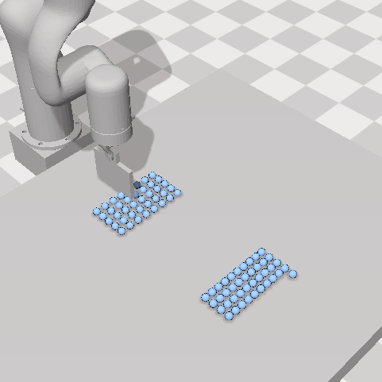
Granular: Pre-training Env
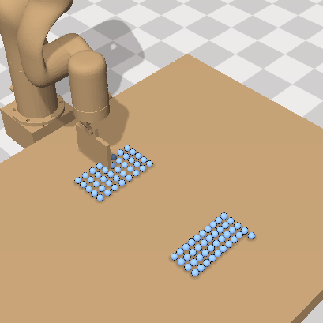
Granular: Table Color
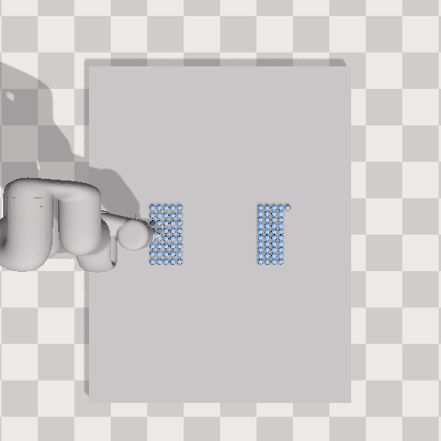
Granular: View Angle
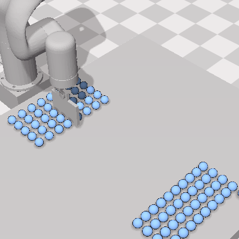
Granular: Granular Size
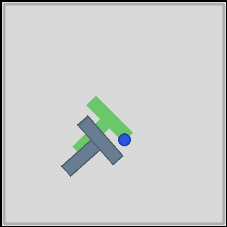
PushT: Pre-training Env
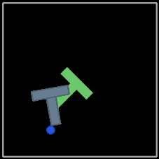
PushT: Background Color
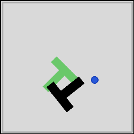
PushT: Block Color
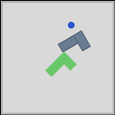
PushT: Block Shape
Variations in SoftGym Granular and PushT environments. Across experiments, we modify visual and physical factors such as table color, camera angle, granular size, background color, block color, and block shape to evaluate adaptation under unseen conditions.
We initialize SPREAD with a pre-trained DINO-WM backbone and enable Online LoRA Stacking together with Ensemble Expert Selection. Agents receive the initial observation and a goal image, and generate actions using a CEM-MPC planner. Environment transitions are not manually specified; instead, SPREAD detects distributional shifts from prediction-loss dynamics. During adaptation, only the most recent LoRA adapter is updated.
In PushT, performance is measured by success rate. In Granular, performance is measured using Chamfer Distance (CD), which captures how closely the actual particle distribution matches the goal image.
Image Goal
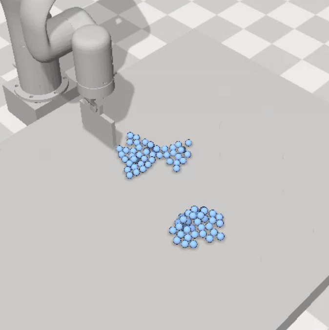
CD 0.35
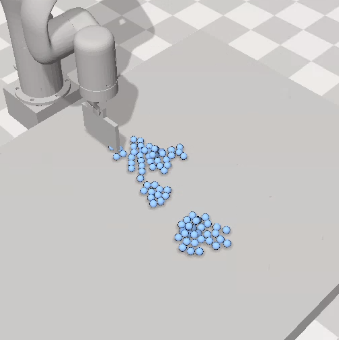
CD 0.5
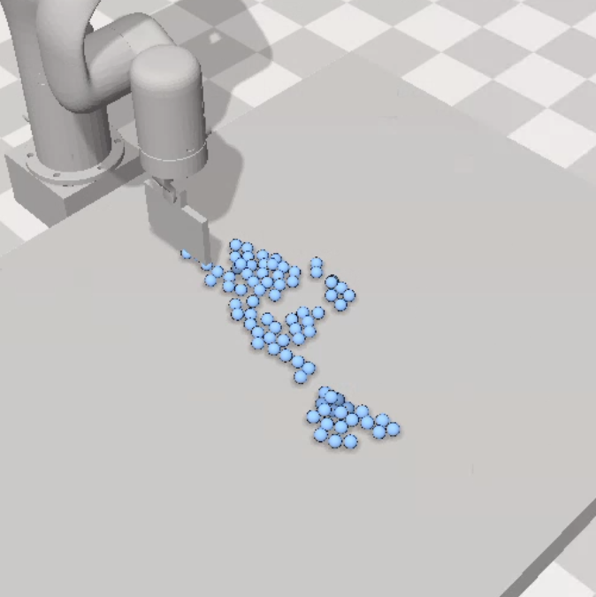
CD 0.7
Distribution of granular particles for varying Chamfer Distance. Lower CD values indicate that the actual particle distribution more closely matches the image goal.
Granular Environment Chamfer Distance
PushT Environment Success Rate
Online adaptation performance in Granular and PushT environments. As LoRA updates proceed, SPREAD recovers performance in unseen environments. In PushT, the agent rapidly restores success under distribution shifts, while in Granular the Chamfer Distance decreases substantially after online adaptation.
In unseen Granular environments, SPREAD reduces both prediction loss and Chamfer Distance after only a short online adaptation period, recovering a large fraction of the degradation caused by visual and physical shifts.
In PushT, the method restores task success that otherwise collapses under background or object variations. This shows that reductions in latent prediction error translate directly into improved downstream planning performance.
Under continual adaptation, SPREAD maintains low forgetting comparable to replay-based methods while preserving fast update speed and negligible storage growth. It also achieves the strongest forward transfer, indicating that previously learned experts provide an effective initialization for newly encountered environments.
We ablate two core components: loss-plateau freezing and expert selection. Plateau-based freezing stabilizes adaptation and helps prevent over-specialization, while expert selection reduces forgetting by reusing the dynamics expert whose latent predictions best match the current transition.
The full SPREAD model, combining both components, achieves the best overall balance between forward transfer and forgetting, supporting the claim that these mechanisms are complementary.
SPREAD extends pre-trained world models to the online continual learning regime. It consistently reduces visual prediction error in unseen environments, improves task performance, mitigates catastrophic forgetting without replay, and enhances forward transfer by selecting experts whose dynamics align with newly encountered environments.
The current evaluation is conducted in simulation and assumes image-based goals inherited from DINO-WM. Future work includes real-robot deployment, integration with policy learning, and more principled methods for managing and pruning large expert ensembles.
@article{anonymous2026spread,
title={SPREAD: Scalable Pre-trained World Model for Adaptive Dynamics Model},
author={Anonymous Authors},
journal={Under Review},
year={2026}
}